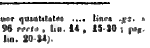
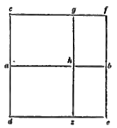

DISTINCTIO V — DE RADICIBUS CUBICIS INVENIENDIS¶
Explicit Distinctio Quarta; Incipit Quinta de Radicibus Cubicis Inueniendis
Fons Criticus: boncompagni:1862 (Scritti di Leonardo Pisano, Vol. II, pp. 148–158 · Cod. Urb. Lat. 292, fol. 92v–100r) · English Translation · Summary · GEOMETOR Notes
Incipit Quinta de Radicibus Cubicis Inueniendis¶
Versio Anglica: Distinctio V — Cube Roots (pp. 148–158) · Commentarius: Notae ad Radices Cubicas
CVM Secundum promissa in huius operis principio de radicibus cubicis oporteat me tractare, de quibus in libro abbaci tractatum inserui spetialem : duxi eundem presentialiter rescribendum, ut continuatis distinctionibus suprascriptis ad finem eiusdem operis possim facilius peruenire.
Cubus quidem numerus est, qui surgit ex multiplicatione trium equalium numerorum, uel ex aliquo quadrato numero in suam radicem ducto. Vt .8. et .27., nam .8. surgunt ex multiplicatione de .2. in .2. ducta in .2., uel ex multiplicatione quaternarij in suam radicem, scilicet in .2., et .27. surgunt ex tribus ternarijs, uel ex nouenario ducto in suam radicem, que est .3. Nam radix cubica octonarij est .2.; et radix cubica de .27. est .3.; et sic intelligas de reliquis cubis numeris, et eorum radicibus: reliqui autem numeri, qui cubi non sunt, radices cubicas in numeris habere non possunt: unde radices ipsorum cubice dicuntur surde. Nam qualiter secundum propinquitatem radix cubica cuiusuis nu-
f. 0156 · p. 149meri reperiri ualeat, demonstrabo. Sed primum, unde modus reperiendi has radices procedat, uolo presentialiter demonstrare. Cum itaque linea diuisa in duas partes fuerit: erunt cubi ipsarum portionum cum triplo multiplicationis quadrati unius cuiusque sectionis in alia equales cubo totius linee. Verbi gratia: sit linea .ab. ut libet diuisa super punctum .g. Dico, cubos portionum .ag. et .gb. cum triplo quadrati portionis .ag. in .gb., et cum triplo quadrati portionis .bg. in .ga. equales esse cubo totius linee .ab.; quod uideatur in numeris: sit tota .ab. 5.; et .ag. sit .3., remanebit .gb. .2.; quarum portionum cubi sunt .27. et .8.: quibus insimul iunctis faciunt .35.; et ex triplo quadrati de 3 in 2 ueniunt .54.; et ex triplo quadrati de .2. in .3. ueniunt .36.; et sic habentur in summa .125., scilicet cubus quinarij, scilicet linee .ab. Nam .5. est radix cubica de .125.; quia ductis 5. in se faciunt .25.; quibus ductis in .5. faciunt .125. Et cum super hanc diffinitionem diutius cogitarem: inueni hunc modum repperiendi radices, secundum quod inferius explicabo. Sed primum uolo demonstrare quomodo secundum hanc diffinitionem debeat quilibet numerus cubicari, ut si uis cubicare .12., accipe cubum de .10., et cubum de .2., in quibus portionibus sicut .12. diuisa, erunt .1008.; super que adde triplum quadrati de 10 ductum in .2., et triplum quadrati de .2. ductum in .10., scilicet 600 et 120, erunt in summa .1728., que sunt cubus de .12.: et sic potes operari in cubicatione cuiusque uis numeri. Vnde reuertatur ad inuentionem radicum cubicarum quorumlibet numerorum. Sed primum sciendum est, qui sunt numeri cubi, qui fiunt a numeris primi gradus. Nam cubus unitatis est .1., binarij .8., ternarij .27., quaternarij .64., quinarij .125., sexnarij 216., septenarij .343., optonarij .512., nouenarij .729., et cubus itaque decenarij .1000.; quibus per ordinem cordetenus cognitis; scias quod radix cubica numerorum unius et duarum et trium figurarum est una figura; quattuor uero figurarum et quinque et sex radix cubica est numerus duarum figurarum. Septem autem figurarum et otto et nouem radix est numerus trium figurarum: et sic semper deinceps crescendo unam, uel duas, uel tres figuras numero in eius radice crescet una figura tantum: his itaque intellectis, oportet docere qualiter inueniatur differentia, que est inter aliquem cubum numerum, et suum sequentem; multiplicabis itaque radicem unius per radicem alterius; et quod prouenerit, triplicabis, et summe addes .1., quod prouenit ex cubicatione unitatis, in qua radix maioris cubi superhabundat radicem minoris: uerbi gratia: uolo scire quantum addit cubus, qui fit a .3., super cubum qui fit a .2.: multiplicationem itaque de .2. in .3. triplica, erunt .18.; quibus adde .1., erunt .19. pro differentia quesita: que .19., si addantur super cubum, qui fit a binario, scilicet super .8., uenient .27., scilicet cubus, qui fit a ternario: his explicatis, ut inueniatur radix de .47., secundum propinquitatem accipe maiorem radicem, quam habent .47. in integris, et est .3.; quorum cubum, scilicet .27., extrahe de .47., remanent .20.; ergo radix cubica de .47. est .3., et remanent .20. Que .3. sit linea .ab.; et proportionabis .20. ad differentiam, que est inter cubum, qui fit a .3., et cubum, qui fit a .4.; quam differentiam inuenies ex triplo multiplicationis de .3. in .4., uno addito, uel extractione .27. de .64.; que differentia est .37.; ex quibus .20. sunt plus medietate: quare adde 1/2 super lineam .ab., sitque .bg.; et inueniatur cubus numeri .ag.; qui sic inuenietur: cubicabo sectiones .ab. et .bg., erunt 1/8 27; quibus superaddam triplum quadrati numeri .ab. in .bg., nec non et triplum quadrati numeri .gb. in .ba., hoc est 1/2 13 et 1/4 2, erunt 7/8 42; quibus usque in .47. desunt 1/8 4; ergo radix cubica de 47 est 1/2 3, et su-
f. 0157 · p. 150perhabundat 1/8 4; que etiam proportionabis ad numerum, qui uenit ex triplo .ag. in .4., que sunt radix sequentis cubi; qui numerus est .42.: ex quibus predicta 1/8 4 sunt quasi decima pars: quare adde uumero .bg. 1/10, que sit .gd.; cuius cubus, qui est 1/1000 cum triplo quadrati .ag. ducto in .gd., scilicet cum 1/4 8/40 3, nec non et cum triplo quadrati .gd. ducto in .ga., scilicet cum 1/2 10/100 extrahe de 1/8 4, remanebunt 344/1000, que sunt 43/125: ergo radix cubica de 47 est 1/10 1/2 3, scilicet 3/5 3, et remanet inde parum plus 1/3 unius integri: quam tertiam si proportionaueris ad numerum, qui peruenit ex triplo .ad. in .4., propius nimirum ad radicem de 47 deuenies. Item si uis inuenire radicem cubicam de 900. Iam scis quia radix eorum quam habent in integrum, cum sint uumerus tertij gradns, est una figura tantum; quam accipe, et est .9., quorum cubus est .729.: quibus extractis ex .900., remaaent .171.; et inuenies differentiam, que est a cubo nouenarij in cubo decenarij; que differentia est .271.: proportionare ergo residua .171. cum .271., ueniunt parum minus de 2/3, quarum duarum tertiarum cubum, scilicet 8/27, extrahe de .171., remanebunt 19/27 170.: deinde multiplica triplum quadrati de .9., scilicet .243. per 2/3, hoc est accipe 2/3 de 243, erunt .162.; que extrahe de 19/27 170., remanent 19/27 8.: deinde accipe quadratum de 2/3, erunt 4/9; quas triplica, ueniet 1/3 1; quem numerum multiplica per .9., uenient .12.; que cum non possint extrahi de 19/27 8., extrahes 19/27 8 de .12., remanent 8/27 3.: diminuta ergo radix de .900. est 2/3 9, et desunt inde 8/27 3., hoc est cubus de 2/3 9 est 8/27 903.: que inuenies si de 2/3 9 facies tertias, scilicet 29., et cubicaueris .29., et eorum cubum per .27. diuiseris, scilicet per cubum ternarij. Et sic propius ad radicem de .900. uenire uis, multiplica 2/3 9 per .10; et quod prouenerit, triplica; uel triplum de 2/3 9 per 10. multiplica, exibunt .290.; in quibus diuide 8/27 3; et quod prouenerit abice de 2/3 9, et habebis propositum. Rvrsus si uis inuenire radicem de .2345., iam scis quia radix eorum, quam habent in integrum, est numerus duarum figurarum: quare ultima figura ipsius radicis ponenda est sub secundo gradu; nam que figura ipsa esse debeat, indicabo. Relinque itaque ex 2345 tres figuras, que faciunt tertium: et secundum: et primum gradum, remanent .2.; ex quibus accipe maiorem radicem, quam habent in integrum, que est .1., et remanent .1.; quam radicem, scilicet .1., pones sub .4.; et pro uno, quod remanet, pone .1. super .2.; et copulabis ipsum cum .345., erunt .1345.; et sic pro radice de .2345. habentur .10., scilicet .1. in secundo gradu, remanent .1345.; pro quibus antepositum .1. oportet ponere talem figuram sub .5.; que multiplicata per triplum quadrati posite figure sub .4., nec non et multiplicata eadem posita figura per triplum quadrati ponende figure: etiam et cubicata ipsa ponenda figura; et hec omnia extracta cum fuerint de .1345., non remaneat inde ultra triplum multiplicationis totius inuencte radicis in numerum sequentem in ordine numerorum. Quam figuram inuenire non poteris nisi ex usitato arbitrio; erit enim ipsa figura .3., que posita sub .5., triplicabis quadratum posite figure, erunt .3., que pones sub tertio gradu; quia cum multiplicatur secundus gradus in se, tertium gradum facit; et multiplicabis posita .3. sub .5. per posita .3. sub .3., erunt .9.; que extrahe ex copulatione de .1. posito super .2. cum sequentibus .3., scilicet .13., remanebunt .4., que pone super .5. tertij gradus; et triplicabis quadratum positorum trium sub .5., erunt .27., que pones sub secundo et primo gradu; quia cum primus gradus multiplicat se ipsum, primum gradum facit, uel terminationem in ipso, multiplicabis ipsa .27. per .1. positum sub .4., et extrahes ipsam multiplicationem ex copulatione quaternarij positi super .3., et se-
f. 0158 · p. 151quentis quaternarij, scilicet de .44., remanent .17. super ipsa .44.; que copulabis cum .5. primi gradus, erunt .175.; de quibus extrahe cubum ternarij positi sub .5., scilicet .27., remanebunt .148., que non excedunt triplum multiplicationis radicis inuencte, scilicet de .13. in numerum sibi sequentem, scilicet in .14.: ergo radix cubica de .2345. est .13., et remanent .148.: accipe ergo triplum multiplicationis de .13. in .14., et adde .1., erunt .547.: ex quibus 148. sunt parum amplius quarte partis. Quare adde 1/4 inuencte radici, erunt 1/4 13.: extrahe ergo cubicationem de 1/4, scilicet 1/64 ex 148., remanent 63/64 147.; et accipe triplum quadrati de 13, erunt .507.; que multiplica per 1/4, uenient 3/4 126; que extrahe de 63/64 147., remanent 15/64 21. Item accipe triplum quadrati de 1/4, scilicet 3/16; et multiplica eas per 13., uenient 7/16 2.; que extrahe de 15/64 21, remanent 51/64 18.: et sic pro radice de 2345. habentur 1/4 13., et superhabundat ex eis 51/64 18.: quare multiplica triplum de 1/4 13. per primum sequentem numerum, scilicet per .14., erunt 1/2 556.: in quibus diuide 51/64 18., exibit circa 1/30; qua addita cum 1/4 13, reddent 17/60 13. pro quesita radice; et sic studeas facere in similibus.
Et si radicem cubicam de 56789. habere desideras; Iam scis per ea que dicta sunt quia radix eorum est numerus duarum figurarum. Quare dimissis tribus primis figuris, radicem reliquarum, scilicet de .56. accipe, eritque .3., et remanent .29.: pone igitur .3. sub secundo gradu, et 29 super .56.; et triplica quadratum positi ternarij, erunt .27., que pone sub quarto et tertio gradu; quia cum secunda figura multiplicatur in se, facit tertium gradum, uel terminantem in ipso: et studeas antepositum ternarium ponere talem figuram que, cum multiplicata fuerit per .27., que sunt in quarto et tertio gradu; et ipsa multiplicatione extracta de .297., scilicet ex multiplicatione predictorum .29. et sequentium .7., remaneat inde numerus qui, cum copulatus fuerit cum sequenti figura, scilicet cum .8., possis ex ipsa copulatione extrahere multiplicationem tripli quadrati ponende figure in positam figuram; et remaneat inde numerus qui, cum copulatus fuerit cum .9. primi gradus, ualeas inde extrahere cubum ipsius ponende figure; et non remaneat inde ultra triplum multiplicationis totius radicis inuencte in numerum sequentem. Et hanc considerationem habeas in omni ponenda figura; eritque illa figura .8.; qua posita sub primo gradu, multiplicabis eam per .27., hoc est primo per .2., et postea per 7. Nam ex ductis .8. in .2. ueniunt .16.; quibus extractis de .29., remanent .13. super ipsis; et ex ductis .8. in .7., ueniunt .56.; quibus extractis de .137., remanent .81. super ipsis: post hec multiplica .8. in se, erunt .64. terminantia in primo gradu; que triplica, erunt .192. similiter terminantia in primo gradu: quare pones ea super suos gradus, scilicet sub tertio, et secundo, et primo; et multiplica ultimam figuram de .192. per .3. posita sub secundo gradu, facient .3. in quarto gradu: quare extrahe eadem .3., scilicet ex ultima figura de .81., remanent .5. super .8.; et multiplica sequentem figuram de .192., scilicet .9. per eadem .3., erunt .27. terminantia in tertio gradu; quia cum secundus gradus multiplicat secundum, tertium gradum facit: quare extrahe .27. de .51., que sunt in tertio gradu, remanent in eisdem gradibus .24.; quibus copulatis cum .8. sequentibus, erunt .248.; ex quibus extrahe multiplicationem figure primi gradus de .192. in .3. predicta, remanebunt .242.: quibus copulatis cum .9., erunt .2429.: ex quibus extrahe cubum octonarij, scilicet .512., remanebunt .1917. Vel aliter multiplica .8. in se, erunt .64.; que pone sub secundo, et primo gradu; mul-
f. 0159 · p. 152tiplicans .6. per .8., et extrahens de .242., remanent .194. super ipsis .242.; quibus copulatis cum .9. sequentibus, faciunt .1949.; ex quibus extrahe multiplicationem prime figure de .64. in .8., scilicet .32., remanebunt similiter .1917., que superhabundant triplum multiplicationis de .38. in .39. Ergo radix cubica de .56789. est .38., et remanebunt inde .1917.; quod residuum addit 3/7 super predicta .38., et parum amplius.
Rvrsus si uis inuenire radicem de 456789., diuisis primis tribus figuris, radicem reliquarum trium, scilicet de 456., que est .7., pone sub secundo gradu; et residuum, quod est .113., pone super eis; et triplum quadrati de .7., scilicet .147., pone ita ut sint terminantia sub tertio gradu; et studeas inuenire figuram, que ponenda est sub primo gradu ante posita .7. per modum demonstratum; eritque .7., quam pone sub primo gradu: et multiplica ea per .1. de 147., erunt .7.; que extrahe ex .11., que sunt super .45., remanent .4. super quartum gradum; que copula cum .3. sequentibus, faciunt .43.; de quibus tolle multiplicationem eorumdem .7. in .4. de .147., remanebunt .15. super .43.; quibus copulatis cum .7., erunt .157.; ex quibus tolle multiplicationem eorumdem .7. primi gradus in .7., que sunt in .47., remanebunt .108. super .157.: deinde tripla quadratum septenarij primi gradus, erunt .147. terminantia in primo gradu; que ordinate per suas differentias per .7., que sunt posita sub secundo gradu, secundum quod in diuisione numerorum docuimus, multiplica. Nam ex unu ducto in .7. ueniunt .7.; quibus extractis de .10. remanent .3. super .0.; et ex .4. ductis in .7. ueniunt .28.; quibus extractis de .38. remanent .10. super .38.; et ex ductis .7. in .7. ueniunt .49.; quibus extractis de .108. remanent .59. super tertium et secundum gradum; quibus copulatis cum .9. primi gradus faciunt .599.; ex quibus extrahe cubum septenarij, scilicet .343., remanent .256.; et sic radix inuencta est .77., et remanent .256.
Adhuc si uis inuenire radicem de 9876543., diuisis siquidem tribus primis figuris, remanent .9876.; quibus positis in aliam partem, earum radicem inuenias ordine demonstrato, erit .21., et remanebunt inde 615.: pone ergo .21. sub tertio et secundo gradu: cum radix septem figurarum sit numerus figurarum trium; et remanentia quod est .615. pone super .876., ut hic ostenditur; et tripla quadratum de .21., erunt .1323., que ponenda sunt terminantia in tertio gradu, in quo terminatur multiplicatio unitatis in se, que posita est sub secundo gradu: quibus ita positis cadit ultima figura eorum sub sexto gradu: deinde pone .4. ante .21.; que figura inuenitur ex magisterio superius demonstrato; et multiplicabis ipsa 4 per unamquamque figuram ordinate de .1323.; et incipies extrahere .6., que sunt super sextum gradum; quia cum primus gradus sextum multiplicat, sextum gradum facit: ergo multiplicabis .4. per 1, et extrahes de .6., remanebunt .2. super .6.; et .4. per 3, et extrahes de .21., remanebunt .9. super .1.; et 4 per 2, et extrahes de 95., remanebunt .87. super quintum, et quartum gradum; et 4 per .3, et extrahes de .875., remanebunt 863. super quintum, et quartum, et tertium gradum: deinde accipe triplum quadrati de .4., scilicet .48., et pone sub secundo, et primo gradu; et multiplicabis .4. ex ipsis .48. per 2. de 21 positis in radice, erunt .8., que extrahenda sunt de numero terminante in quarto gradu, scilicet de 86.; quia cum secundus gradus multiplicat tertium, quartum gradum facit, remanebunt .78. ex ipsis .86. super quintum, et quartum gradum: et eadem .4. multiplicabis per .1. de .21., erunt .4., que extrahenda sunt de numero terminante in tertio gradu, scilicet de .783.; quia cum secundus gradus
f. 0160 · p. 153


secundum multiplicat, tertium gradum facit, remanebunt .779. super quintum, et quartum, et tertium gradum. Deinde multiplicanda sunt .8., que restant de .48., gradatim per eadem .21.; ergo multiplicabis .8. per .2., erunt .16., que extrahes de numero terminante in tertio gradu; quia cum primus gradus multiplicat tertium, tertium gradum facit, remanebunt .763. super quintum, et quartum, et tertium gradum; et 8 per 1. faciunt 8, que extrahes de numero terminante in secundo, scilicet de .7634.; quia cum primus gradus multiplicat secundum, secundum gradum facit, remanebunt inde .7626. super quintum, et quartum, et tertium, et secundum gradum; que copula cum .3., que sunt in primo gradu, erunt .76263.; de quibus extrahe cubum de .4., scilicet 64., remanebunt .76199. super radicem inuenctam, que est .214. Eodem modo si radicem alicuius numeri octo, uel nouem figurarum reperire uis; relictis primis figuris: radicem reliquarum per demonstratum modum inuenire studeas; et de inde, copulato residuo earum cum tribus dimissis figuris, facies secundum quod modo fecimus, et inuenies quesitum. Si deus uoluerit: eadem uia et ordine poteris operari in reperiendis radicibus cubicis numerorum decem, uel plurium figurarum.
CVM inter unitatem, et numerum aliquem duo numeri in proportione continua ceciderint, primus eorum radix cubica ultimi numeri esse in Geometria monstratur aperte. Vnde si geometrice radicem cubicam alicuius numeri inuenire uolumus, oportet nos uti modis antiquorum, per quos docetur ponere inter duas quantitates datas alias duas quantitates; ita ut omnes quatuor quantitates sint in proportione una: et quamuis hoc facili operari non possit; tamen, qualiter hoc fieri debeat, indicemus. Sint due date quantitates .c. et .f. Volumus inter .c. et .f. quantitates duas in continua proportione ponere; et sit .f. maior quam .c. Ponam siquidem circulum .abgd., cuius dyameter .ag. sit equalis quantitati .f.; et ponam in circulo .abgd. lineam .gd. equalem quantitati .c.; et intelligam super semicirculum .adg. semicolumnam esse orthogonaliter erectam, cuius semirotunditas cadat super arcus .adg.: quare dyameter basis columne cadet super dyametrum .ag.; et eius termini erunt super puncta .a. et .g.: et tunc erigetur super .ag. superficies plana semicolumne orthogonaliter; et in ipsa circinabo semicirculum .aeg., cuius superficies orthogonaliter erecta est super superficiem circuli .abgd.; et a puncto .a. protraham rectam .az. faciens angulum rectum super rectam .ga., et faciam eam concurrere cum linea .gd. in punctum .z.; et mouebo semicirculum .aeg. ex parte .a.; et reuoluam trigonum .zag. super rectam .ag., que sit immobilis in reuolutione sua; et commouebo semicirculum .aeg., stabit immobiliter punctus .g.; et hoc faciam donec arcus .aeg. concurrat cum linea .gz. in superficie columne in puncto .h.; et erit tunc dyameter semicirculi .aeg. recta .gta.: et copulabo rectam .ht. cadens orthogonaliter super superficiem columne super arcum .atd., et copulabo rectam .ah.: deinde intelligam, arcum .dkb. signatum esse a puncto .d., cum reuoluitur triangulus .zaig., et cadit punctus .d. super punctum .b. in reuolutione sua; et copulabo rectam .gh., et signabo punctum .l., ubi recta .gh. occurrit arcui .d.k.b.; et ducam .l.m. rectam, que cadit orthogonaliter super circulum .abgd.; et protraham rectam .lt.: et quoniam in semicirculo .bkd. protracta est recta .lm. orthogonaliter super dyametrum eius .bd., erit superficies .bm. in .md. equalis eius quod a recta .lm. Sed superficiei .bm. in .md. equatur superficies .g.m. in .mt., cum recte .db. et .gt. secent se in circulo
f. 0161 · p. 154

.abgd.; quare angulus .glt. est rectus. Est enim et angulus .gth. rectus, cum recta .ht. sit in superficie columne. Et quoniam semicirculus est arcus .geha., erit et angulus .gha. rectus: similiter et angulus .g.m.l. est rectus; orthogonia ergo sunt trigona .gha., et .gth., et .glt., et .gml., et habent unum angulum comunem, eum uidelicet qui sub .lgm.; ergo ipsa trigona sibi inuicem sunt similia: et habent circa comunem angulum latera proportionalia; quare est sicut .ag. ad .gh., ita recta .hg. ad .gt., et .tg. ad .gl., et .lg. ad .gm.: posite quidem sunt tres recte continue proportionales inter rectas .gm. et .ga., que sunt .gl. .gt. .gh. Inter rectas quoque .gl. et .ga. cadunt due recte .gt. et .gh. in proportione continua. Sed .gl. recte equalis est recta .gd. Sed .gd. equalis fuit recte .c.; et .ga. equalis est recte .f.; ergo inter .c. .f. quantitates posite sunt due quantitates in proportione continua, que sunt .gt. et .gh.; quare si quantitas .c. fuerit unum, erit quantitas .gt. radix cubica numeri .f.; quod oportebat facere.
OSTENDAM aliter qualiter inueniam inter duas lineas. Duas lineas ita ut continuentur omnes secundum proportionem unam. Ponam ergo duas lineas .ab. .bg.; et angulus eorum sit rectus. Deinde continuabo .ag.; et faciam super lineam .ag. trianguli .abg. circulum .abg. Deinde protraham ex puncto .a. perpendicularem .ad. super lineam .ab.; et ex puncto .g. super .bg. perpendicularem .dg.; et protraham utramque secundum rectitudinem usque ad .z. et .e.: deinde faciam transire regulam, que moueatur super punctum .b., et non separetur ab eo; et sic abscidens duas lineas .dz. et .de., et non cesset moueri, donec sit illud quod cadit ex eis inter .z.b. equale ei quod cadit inter .e.h.: ergo linea .zh. est equalis linee .eb.; ergo multiplicatio .zh. in .zb. est equalis multiplicationi .be. in .he.: uerum .eb. in .he. est equalis .de. in .ge.; et .hz. in .zb. est equalis .dz. in .za.; ergo multiplicatio .dz. in .za. est sicut multiplicatio .de. in .eg.: ergo proportio .de. ex .dz. est sicut proportio .az. ex .ge. Sed proportio .ed. ex .dz. est sicut proportio .ba. ex .az.; et proportio .ba. ex .az. est sicut proportio .az. ex .ge., et etiam sicut proportio .ge. ex .bg.; et illud est quod demonstrare uolumus. Probatur hec figura per penultimam tertij Evclidis, et per similitudinem triangulorum hoc modo: si .gb. ponatur aliquis numerus; et .ab. ponatur unum, erit .az. radix cubica de .gb.; quia sicut probatum est, ita se habet .ba. ad .az., sicut .az. ad .ge., et sicut .ge. ad .gb.; quare inter .gb. et .ba. iam ceciderunt due linee proportionaliter, scilicet linea .ge., et linea .az. et .az. sequitur unum in proportione; ergo est radix cubica.
ALITER sint rursus due quantitates .a.b., inter quas uolumus ponere duas quantitates, ita ut continuentur secundum proportionem unam. Ponam quantitatem .gd. equalem quantitati .a.; et erigam ei lineam .de. rectum angulum; et ponam lineam .de. equalem quantitati .b.; et protraham lineam .ge.; et extendam duas lineas .gd. .ed. secundum rectitudinem; et non ponam eis utrisque finem determinatum; et erigam super punctum .e. linee .ge. lineam orthogonaliter erectam; et protraham ipsam donec occurrat linee, que extenditur secundum rectitudinem cum linea .gd. super punctum .z.; et ponam ei equidistantem lineam .gm.; et extendam lineam .mg. in partem alteram secundum rectitudinem usque ad punctum .p., ut sit linea .mp. equalis linee .ez.; et extimabo quod possit .ez. moueri ex parte puncti .z. inseparabilis in motu suo in lineam .zd.; et linea in motu suo non cesset transire super punctum .e. linee .ge., ut quando mo-
f. 0162 · p. 155

uetur .ze. sicut narrauimus, tunc .z. est extremitas eius ex linea .zg.; tunc linea .ze. est in illa dispositione, ut secundum rectitudinem sit ostendendum, quod est inter motum puncti extremitatis eius, et punctum .e., sicut linea .ze. Deinde signabo super lineam extensam secundum rectitudinem signum .k.; et in maginabo quod linea .mp. moueatur ex parte puncti .m. ad partem puncti .k.; et sit extremitas eius, que est apud .m. inseparabilis in motu suo in linea .dk.; et linea .mp. in motu suo non cesset ire super punctum .g. linee .ge., sicut narrauimus de motu linee .ze. Et in maginabo quod due linee .mp. .ze. in motu suo sint equidistantes: et in maginabo quod super extremitatem linee .ze. super punctum .e. sit linea erecta orthogonaliter super lineam .ze. sequens eam in omni motu suo: et non ponam huic linee finem determinatum; et hec linea non cesset abscidere lineam .mp. apud motum duarum linearum .ze. .mp. Cum ergo mouentur due linee .ze. .mp.; et sint in motibus suis equidistantes, adherent extremitates utrarumque duabus lineis .zd. .mk., sicut narrauimus: procul dubio linea erecta super lineam .ze. orthogonaliter, que mouetur cum ea, et secat lineam .mp., peruenit ad punctum .p.
Quando ergo peruenit linea erecta super punctum .e. ad punctum .p., perueniunt illic due linee .ze. .mp.; et copulabimus duas lineas .ep. .zm. Et scitum quidem est, quod linea .ep. erigit unamquamque duarum linearum .ze. .mp. orthogonaliter. Quoniam est linea, quam posuimus in principio esse erectam orthogonaliter super lineam .ze., et mouetur cum ea, donec peruenit ad punctum .p. Dico ergo quod due linee .dm. .dz. sunt due quantitates, que iam ceciderunt inter duas quantitates .gd. et .de.; et proportio .gd. ad .dm. est sicut proportio .dm. ad .dz., et sicut proportio .dz. ad .de.; cuius demonstratio est. Quoniam due linee .ze. .mp. sunt equidistantes et equales; et duo anguli .zep. et .mpe. sunt recti; tunc linea .zm. est equalis linee .ep.; et unusquisque duorum angulorum .ezm. et .mpe. est rectus. Sed illa uero linea .md. est perpendicularis super lineam .zg.; et linea .zd. est perpendicularis super lineam .me. Ergo proportio linee .gd. ad .dm. est sicut proportio .dm. ad .dz., et sicut proportio .dz. ad .de. Verum linea .gd. est equalis quantitati .a.; et linea .de. est equalis quantitati .b.; ergo due linee .de. .dm. iam ceciderunt inter duas quantitates .a.b., et continuatur secundum proportionem unam; et illud est quod uolumus ostendere.
Incipit de multiplicatione radicum cubicarum inter se.
Si uis multiplicare radicem cubicam de .40. per radicem cubicam de .60., multiplica .40. per .60., erunt .2400., quorum radix cubica est id quod queris. Et si uis .5. multiplicare per radicem cubicam de .90., cubica .5., erunt .125.: ergo uis multiplicare radicem cubicam de .125. per radicem cubicam de .90.; quare multiplicabis .125. per .90.; et eius quod prouenerit radix cubica est illud quod queris. Et si uis multiplicare duas cubicas radices de 20. per tres radices cubicas de .40., redige eas ad radicem cubicam unius numeri sic: pro duabus radicibus de .20. cubicabis .2., erunt .8.; que multiplica per .20., erunt .160., quorum radix cubica equatur duabus radicibus de .20.: similiter pro tribus radicibus de .40. cubica .3., erunt .27.; que multiplica per .40., erunt .1080., quorum radix cubica habetur pro tribus radicibus de 40.: multiplica ergo .160. per .1080.; et eius quod prouenerit radix cubica erit illud quod queris. Item si uis multiplicare radicem cubicam de .20. per aliquid, unde proueniat aliquis numerus datus, ut dicamus .10., cubica .10., erunt .1000.; que diuide per .20., exibunt .50.,
f. 0163 · p. 156quorum radix cubica est id quod queris. Et si uis inuenire duas radices cubicas numerorum non cuborum, que insimul multiplicate faciant numerum ratiocinatum, cubica unum numerum qualem uis: et inuenias duos numeros, qui insimul multiplicati faciunt ipsum cubum numerum. Cubice autem radices ipsorum duorum numerorum erunt quesita: uerbi gratia: cubicentur .6., erunt .216.; et inuenias duos numeros, qui insimul multiplicati faciant .216.; eruntque .9. et .24., quorum radices cubice sunt quesita. Aliter adiaceant duo numeri quadrati quales uis; sintque .4. et .9.; multiplica per unum quemque ipsorum per radicem alterius, exibunt .12. et .18., quorum radices insimul multiplicate faciunt radicem cubi numeri, ut querebatur.
Incipit de diuisione radicarum inter se.
Si uis diuidere radicem cubicam de .100. per radicem cubicam de .5., diuide .100. per .5., prouenient .20., quorum radix cubica est id quod queris. Et si diuiseris .5. per .100, prouenient 1/20, cuius radix cubica est id quod prouenit ex radice de .5. diuisa in radicem de .100. Et uis diuidere .8. per radicem de .32., cubum de .8., scilicet .512., diuide per .32., uenient .16., quorum radix cubica est id quod queris. Et si uis diuidere radicem de .80. per .2., diuide .80. per cubum binarij, uenient .10., quorum radix cubica est id quod queris. Item si uis diuidere octo radices cubicas de .10. per tres radices cubicas de .5., rediges pluralitatem ipsarum radicum ad radicem unam, et habebis .5120. pro octo radicibus de .10.; et pro tribus radicibus de .5. habebitur radix de 135.
Incipit de aggregatione et disgregatione radicarum.
Scias in additione et disgregatione radicum cubicarum euenire ea que inter radices eueniunt quadratorum, uidelicet quod quedam ex eis possunt inter se aggregari, et disgregari: et quedam non. Cum itaque cubice radices inter se proportionem habuerint, ut cubus numerus ad cubum numerum, tunc inter se aggregari possunt, et disgregari. Vnde si eas, quarum cubi habent proportionem sicut numerus cubus ad cubum numerum aggregare uis; radices ipsorum cuborum insimul adde: et quod prouenerit, cubica; et cubicatam summam multiplica per multiplicitatem, quam habent cubi ipsarum radicum ad cubos proportionis. uerbi gratia: uis addere radicem cubicam de .16. cum radice cubica de .54., quorum numerorum proportio est sicut cubus numerus .8. ad cubum numerum .27.; et unusquisque ipsorum duplus est sui cubi: adde ergo radicem cubicam de .8. cum radice cubica de .27., scilicet .2. cum .3., erunt .5.; que cubica, erunt 125.; que multiplica per .2. propter .16. et .54., que sunt dupla de .8. et de .27., erunt 250., quorum radix cubica est additio quesita. Et si ipsas radices disgregare uis, radicem de .8. ex radice de .27. extrahe, remanebit unum, cuius cubum, scilicet .1., multiplica per predictam multiplicationem, scilicet per .2., et habebis radicem de .2. pro residuo quesite extractionis. Item si uis addere radicem cubicam de .4. cum radice cubica de .32., quorum numerorum proportio est sicut .1. ad .8.; et unusquisque eorum quadruplus sui cubi. Quare radicem cubicam de .1. adde cum radice de .8., erunt .3.; quorum cubum, scilicet .27., quadruplica, erunt .108., quorum radix cubica est additio quesita. Et si radicem de .4. extrahere uis ex radice de .32., radicem de .1. extrahe ex radice de .8., remanet .1., cuius cubum, scilicet .1., quadruplica, erunt .4., quorum radix cubica est residuum quesite extractionis.
Aliter sit linea .ab. radix cubica de .32.; et .bc. sit radix de .4.; et uolo scire quan-
f. 0164 · p. 157



titatem totius .ac. Quoniam linea .ac. diuisa est in duo super punctum .b., erunt duo cubi portionum .ab. et .bc. cum triplo quadrati .ab. in .bc., nec non et cum triplo quadrati .bc. in .ab. equales cubo totius linee .ac. Quare addantur cubi portionum .ab. et .bc., scilicet .32. cum .4., erunt .36.; et multiplicetur .ab. in se, scilicet radix cubica de .32., in radicem cubicam de .32., ueniet radix cubica de .1024.; quam radicem triplica, scilicet multiplica .1024. per .27., ueniet radix cubica de .27648.; quam radicem multiplica in .bc., scilicet in radicem cubicam de .4., ueniet radix cubica de .110592., que est .48.: uel aliter ex quadrato linee .ab. in .bc. proueniet semper cubus numerus in similibus: quare multiplica .1024. per .4., erunt .4096., quorum radix cubica est .16.; que multiplica per .3., erunt .48.; que adde cum .36., erunt .84. Item quadratum linee .bc., scilicet radicem cubicam de .16., multiplica per .ab., scilicet per radicem de .32., ueniet radix cubica de .512., que est .8.; quam multiplica per .3., erunt .24.; que adde cum .84., erunt .108. pro cubo totius linee .ac. Ergo .ac., scilicet coniunctum ex radice de .32., et ex radice de .4. est radix cubica de .108., ut per alium modum inuenimus. Et si radicem de .4. per alium modum ex radice de .32. extrahere uis, quandam diffinitionem linee diuise, quam huic operi necessariam inueni, oportet predicere, uidelicet. Vt cum aliqua linea utlibet diuisa in duo fuerit, cubus totius linee cum numero solido, qui fit a quadrato unius portionis, et tota linea equalis duplo numeri solidi, qui fit a quadrato totius linee, et ab eadem portione, et solido, qui fit a quadrato relique portionis, et a tota linea. Verbi gratia: sit linea .ab. .5. diuisa super .g.; et sit .ag. 3.; quare .gb. est .2.: erit itaque cubus linee .ab. 125.; et solidus qui fit a quadrato linee .gb. in lineam .ab. erit .20.: quibus additis cum .125., erunt .145., quibus equabitur duplum solidi, quod fit a quadrato linee .ab. in lineam .bg. cum solido, quod fit a quadrato linee .ga. in lineam .ab.: quia ex ductu .ab. in se ueniunt .25.; quibus ductis in .gb., erunt .50., quorum duplum est .100.: quibus additis cum multiplicatione quadrati linee .ga. in .ab., scilicet cum 45, faciunt .145., ut oportet. Hac itaque diffinitione intellecta, pro radice cubica de .32. adiaceat linea .de.; et accipiatur ex ea portio .ez., que sit radix cubica de .4., remanet .zd. ignota, quam inuenire uolumus. Constituam igitur super lineam .de. quadrilaterum equilaterum et equiangulum .cdef.; et signabo punctum .b. in lineam .ef., ita ut .eb. sit equalis linee .ez.; et per punctum .b. protraham lineam .ba.; et sit .ad. equalis linee .be. Item per punctum .z. protraham .zg.; et sit .gf. equalis .ze. Quibus explicatis, accipiam cubum linee .de., qui est .32.; et multiplicabo .ze. in se, prouenit radix cubica de .16. pro quadrato .hzeb.; quam superficiem ductam in altum secundum quantitatem linee .de.; hoc est multiplicabo superficiem .zb., que est in plano, per equalem linee .de.; quam intelligo eleuatam in altum, scilicet radicem de .16. per radicem de .32., prouenit radix cubica ipsius numeri, qui prouenit ex .16. in .32.: sed ex .16. in .32. prouenit idem quod ex dimidio de .16. in duplo de .32., scilicet ex .8. in .64.: sed ex ductis .8. in .64. prouenit numerus cubus, cum .8. et .64. sint cubi, cuius radix est illud quod prouenit ex radice de .8. in radice de .64., scilicet de .2. in .4.; et sic habentur .8. pro solido, qui fit a quadrato linee .ez. in lineam .ed.: quibus .8. additis cum .32., scilicet cum cubo linee .ed., faciunt .40.; de quibus si auferatur duplum solidi, qui fit a superficie .a.d.e., et a linea .ed., hoc est duo solidi, qui fiunt a superficie predicta, et a superficie .zefg. eleuatis in altum secundum lineam .ed., remanebit so-
f. 0165 · p. 158lidum, quod fit eleuatum in altum secundum quantitatem linee .de. super quadratum linee .za. ignote, scilicet super quadratum .cahg. Nam solidus qui fit a superficie .adzh. eleuata in .de. habetur ex multiplicatione .be. in .ed. ducta in .ed., hoc est ex quadrato linee .ed. in .ez.; ergo multiplicabis radicem de .32. in se, ueniet radix de .1024.; quam multiplicabis per .be., hoc est per .ez., scilicet per radicem de .4., ueniet radix illius, quod prouenit ex duplo de .1024., scilicet ex .8. in .512.: sed radix eius quod prouenit ex .8. in .512. est id quod prouenit ex .2. in .8., scilicet ex radice de .8. in radicem de .512.; ergo solidus qui fit ex .de. in .ez. producta in .de. erunt .16.; quorum duplum extrahe de .40., remanent .8. pro solido qui fit a quadrato linee .zd. in lineam .de. Quare si diuiseris .8. per lineam .de., scilicet per radicem cubicam de .32., ueniet radix cubica de .16. pro quadrato linee .zd., hoc est pro superficie quadrata .ag. Quare radix quadrata radicis cubice de .16., scilicet radix cubica de .4., est linea .ha., hoc est linea .zd.: ergo si de radice cubica de .32. auferatur radix cubica de .4., remanet radix cubica de .4., ut per alium modum inuenimus. Et quia inuencta est linea .zd. equalis linee .ze., erit tota linea .de. duplum linee .ez. Vnde ex hoc manifestum est, quod cum aliquis numerus fuerit octuplum alterius, tunc radix cubica maioris erit duplum radicis cubice minoris. Vnde radix cubica de .32. soluitur in duabus radicibus de .4.: quare cum uis addere radicem de .32. cum radice de .4., tunc uis addere duas radices de .4. cum una radice de .4., ex qua coniunctione proueniunt tres radices de 4, hoc est radix eius quod prouenerit ex ductis 27. in 4. Similiter cum uis extrahere radicem de 4. ex radice de 32., tunc ex duabus radicibus de 4 extrahe unam radicem de 4, remanebit una radix de 4, ut modo inuenimus. Et ut hec melius declarescant, addatur radix de 135 cum radice de 1715, quorum proportio est sicut cubus 27 ad cubum 343; et est unusquisque eorum quincuplus sui cubi. Quare accipe radices ipsorum cuborum, erunt .3 et 7: dic ergo te uelle addere tres radices de 5 cum septem radicibus de 5; ex qua iunctione proueniunt decem radices cubice de 5, hoc est una radix de 5000. Et si uis extrahere radicem de 135 ex radice de 1715, extrahe tres radices de 5 ex septem radicibus de 5, remanebunt quattuor radices de 5, scilicet una radix de 320. Et sic intelligas in omnibus radicibus cubis inter se comunicantibus: relique uero radices, que proportionem non habent, addi, nec disgrari (sic) possunt. Vnde si uis addere radicem cubicam de 5 cum radice cubica de 3, proueniet ex eorum addictione radix de 5, et radix de 3: et si uis eas disgregare, habebis radicem de 5, minus radice de 3; et aliter dici non possunt pulcrius. Vnde huic capitulo finem in ponimus.